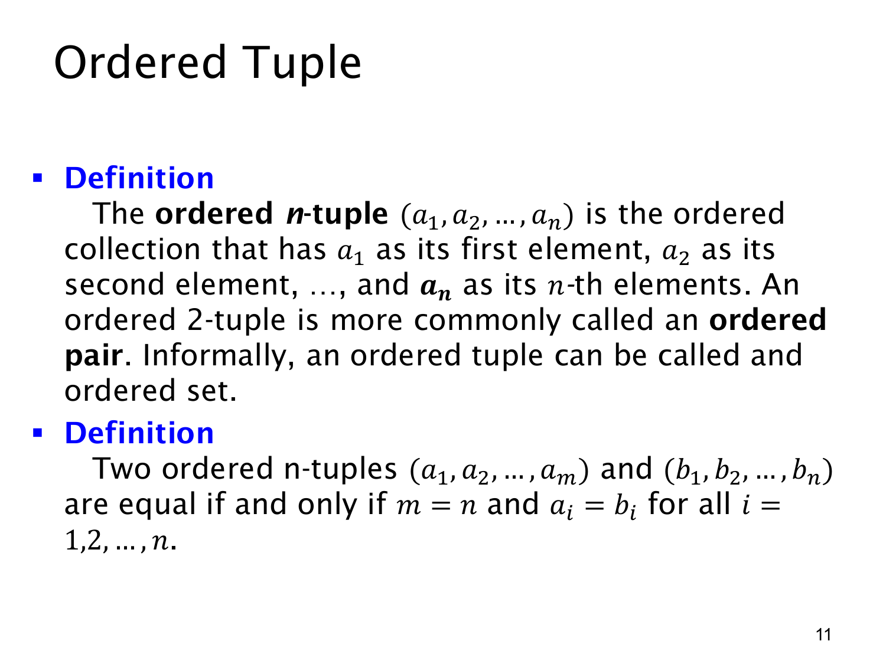

L1.4 · 第 11 页讲解原文
查看这一页课件

有序元组：位置也是内容的一部分
有序 n 元组（ordered n-tuple）记为 (a1,a2,…,an)，其中第一个位置是 a1、第二个位置是 a2，依此类推到第 n 个位置。n=2 时通常称为有序对（ordered pair），例如 (a,b)。
与集合的“无序”不同，元组的位置不可随意调换。一般来说，(1,2)=(2,1)，而集合 {1,2}={2,1}。元组也允许重复值，例如 (1,1,2) 是一个长度为 3 的元组；即使两个位置的值相同，这两个位置仍然存在。
两个元组相等，要同时满足两个条件：长度相同，且每个对应位置的值相同。对 (a1,…,am) 与 (b1,…,bn)，即
(a1,…,am)=(b1,…,bn)⟺m=n ∧ ∀i∈{1,…,n}(ai=bi).
例如 (1,2,1)=(1,2) 是因为长度不同；(1,2)=(1,3) 是因为第二个位置不同。课件说元组有时可非正式地叫作“有序集合”，但为避免与前几页定义的无序集合混淆，后续最好继续使用“元组”或“有序对”这个明确名称。